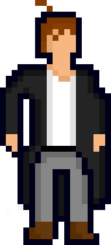
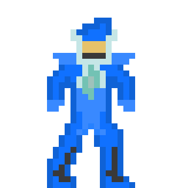
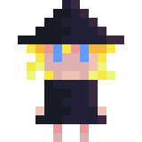
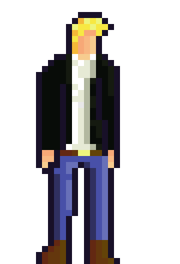
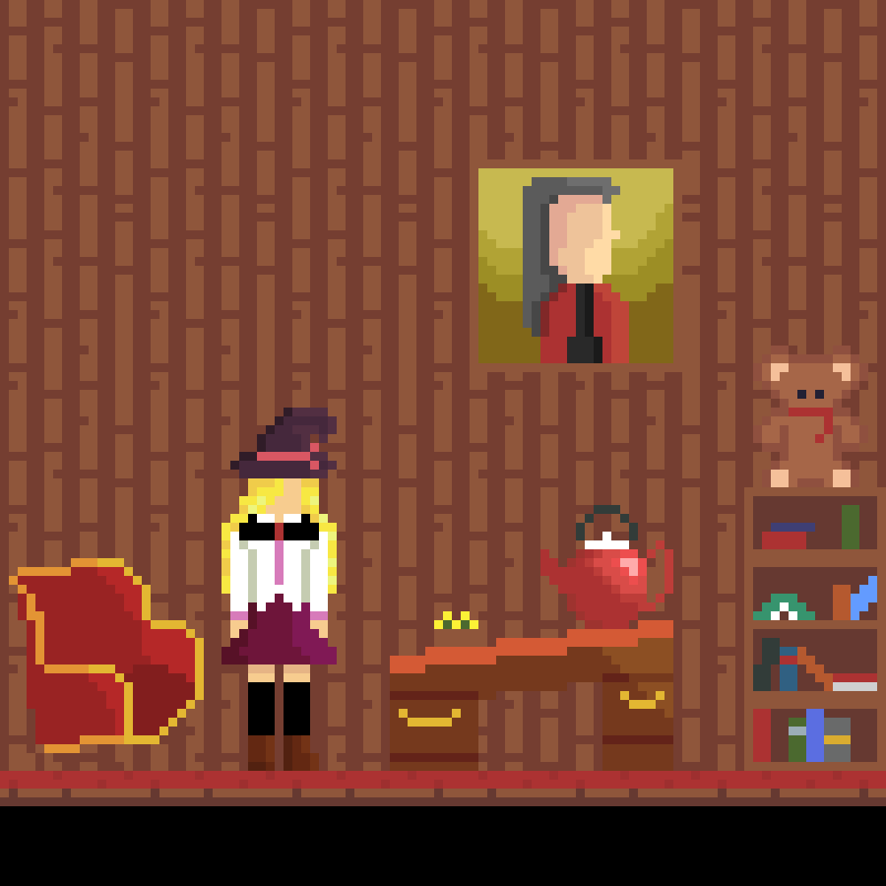

December 27th, 2020
This year has been crazy. If you'd told me at the last new years party I went to that we'd all be wearing surgical masks for most of the year, I'd have called you nuts. But despite that, no, because of that, it's important to keep busy and not let yourself fall into a slump. Here's what I got done.
We all knew this would be a major section of this post, so here goes:
This was the hardest thing for me, and something I was convinced I'd never gain any skill at: art. Games require a *load* of the stuff and I doubted I'd be able to find an artist willing to make sprite after sprite for me with no guarantee that it'd amount to anything. So I started on my own, with my first sprite being created in February.





I authored nine blogposts, eleven devlogs, and hundreds of commits. I finished my hardest semester of uni (with honors!), managed to quit smoking (for over a month now) and I've broken all my personal fitness records.
Honestly, I don't really believe in making new years resolutions. I feel like if I'm forcing myself to wait until an entire new year to make a change in my life, I don't actually want to change that much. However, there are some things I'd like to keep up with:
Just three things, how hard can it be? Thanks for reading, here's to a better year.